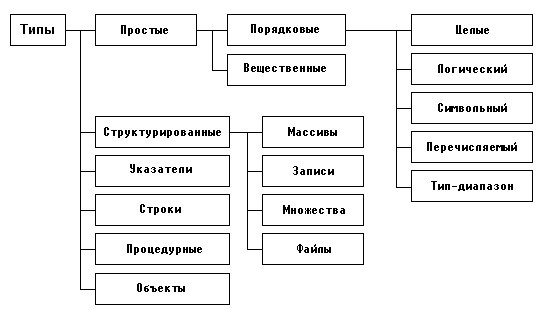

|
|
|
Типы данных
Любые данные, т.е. константы, переменные, значения функций или выражения, в Турбо Паскале характеризуются своими типами. Тип определяет множество допустимых значений, которые может иметь тот или иной объект, а также множество допустимых операций, которые применимы к нему. Кроме того, тип определяет также и формат внутреннего представления данных в памяти ПК.
Турбо Паскаль характеризуется разветвленной структурой типов данных (рис.4.1).

Рис.4.1. Структура типов данных
В Турбо Паскале предусмотрен механизм создания новых типов данных, благодаря чему общее количество типов, используемых в программе, может быть сколь угодно большим.
В этой главе приводится подробное описание всех типов, за исключением файлов и указателей, которые рассматриваются в следующих двух главах, а также процедурных типов, которые рассматриваются в гл.8, и объектов (гл.10).
|
|
|